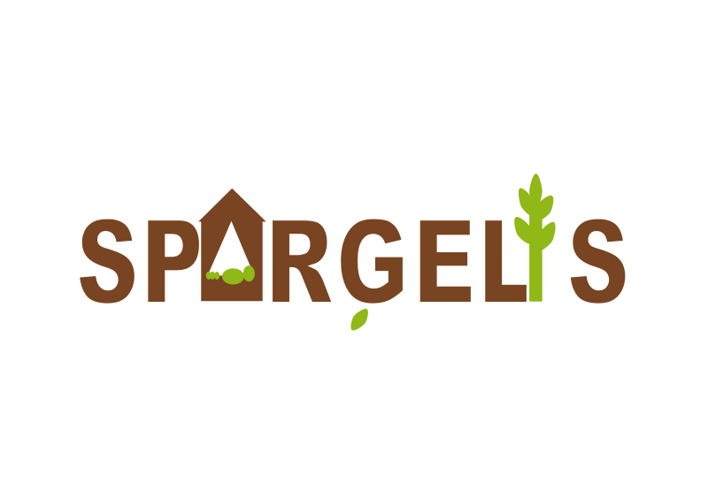
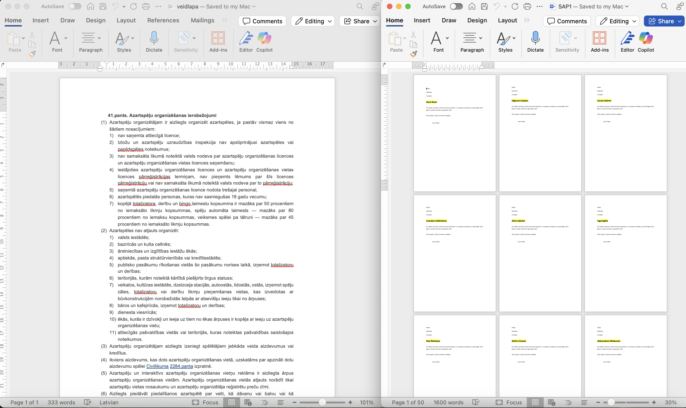
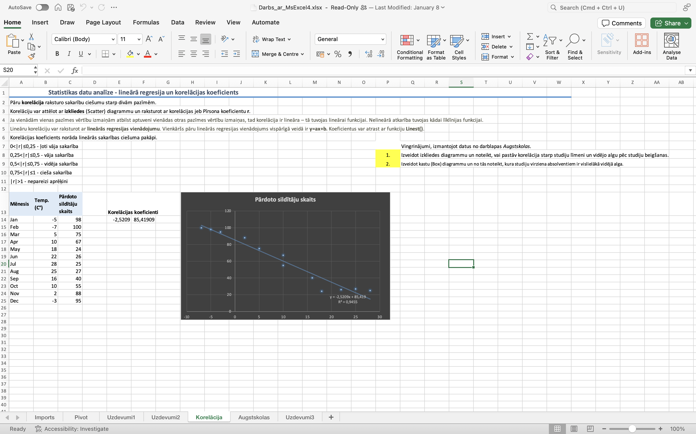

DATORIKAS PORTFOLIO
Esmu 10. klases skolniece un šajā mājaslapā esmu izveidojusi savu datorikas kursa portfolio. Te ir pārskatāmi parādītas visas tēmas, kuras apguvu 10. klasē: attēlu apstrāde, video apstrāde, teksta apstrāde, darbs ar izklājlapām.
ATTĒLU APSTRĀDE
Šajā tēmā guvu iemaņas gan vektorgrafikā, gan rastrgrafikā.
Rastrgrafika
Rastrgrafiku veidoju GIMP programmatūrā.

Vektorgrafika
Vektorgrafiku veidoju INKSCAPE programmatūrā.

VIDEO
Šajā tēmā veidoju video par savas grupas 3D modeļa printēšanas procesu.
TEKSTA APSTRĀDE
Šajā tēmā apguvu teksta un rindkopas formatēšanu, dažādu objektu ievietošanu, veidņu izveidošanu un pasta sapludināšanu. Visus uzdevumus veicu programmatūrā Microsoft Word.

IZKLĀJLAPAS
Šajā tēmā apguvu šūnu formatēšanu un adresāciju, diagrammu, raksturtabulu, histogrammu, izkliedes diagrammu un korelācijas ievietošanu, datu kārtošanu un filtrēšanu, . Visus uzdevumus veicu programmatūrā Microsoft Excel.
